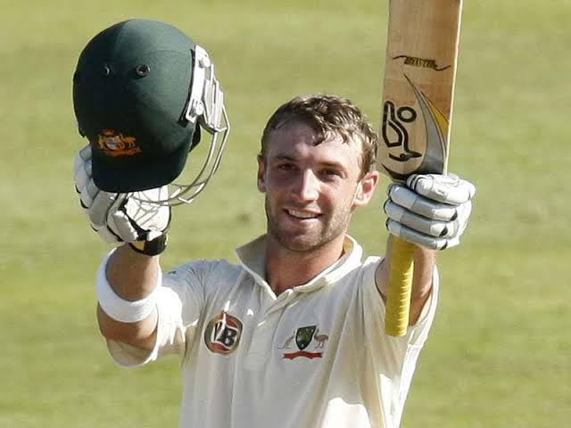
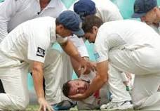
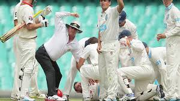
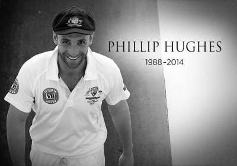
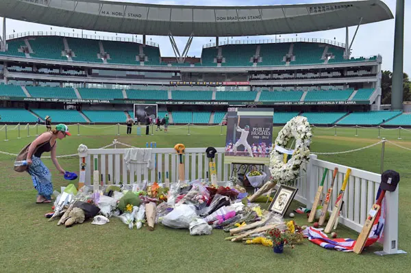
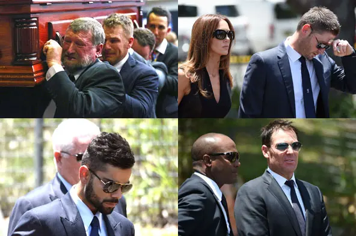
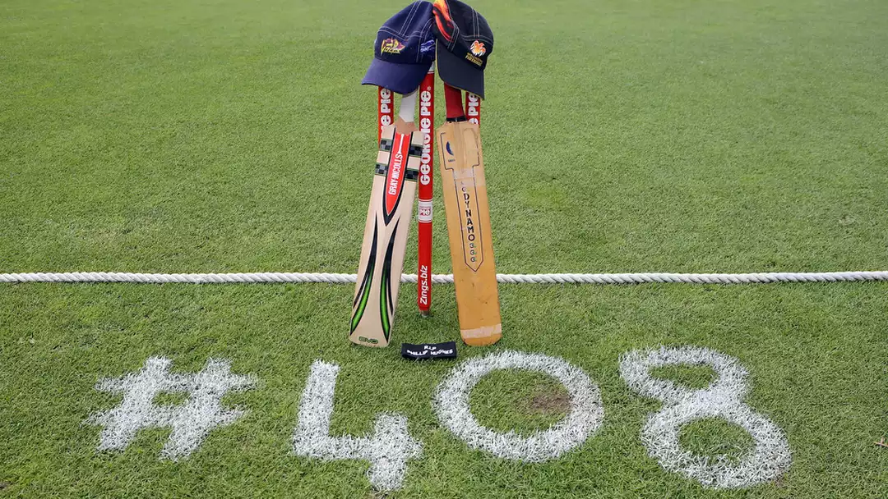

A tribute to Phillip Hughes
Phillip Joel Hughes was an Australian Test and One Day International (ODI) cricketer who played domestic cricket for South Australia and Worcestershire. He was a left-handed opening batsman who played for two seasons with New South Wales before making his Test debut in 2009 at the age of 20.
Hughes scored his first Test century in March 2009, aged 20, in his second Test match for Australia, opening the batting and hitting 115 in the first innings against South Africa in Durban. This made Hughes Australia's youngest Test centurion since Doug Walters in 1965. In the second innings of the same match, Hughes scored 160, becoming the youngest cricketer in history to score centuries in both innings of a Test match (Australia won the match by 175 runs). On 11 January 2013, he became the first Australian batsman in the history of ODI cricket to score a century on debut, a feat which he achieved against Sri Lanka in Melbourne.
Those are memories nobody can take away, either from those who knew Hughes closely or those who simply admired his cricketing talent from afar. We could unearth many more. It feels right to finish this live blog with such positive images from a career that, while cut tragically short, gave so much excitement and fun – in keeping with what was, by every single account that you hear, Hughes’ character. There will, I am sure, be further tributes appearing on these pages in the coming hours and days. Phillip Hughes will never be forgotten. Rest In Peace.








“I truly, truly believe today – if he was still with us – he’d be in my position or Uzzie’s (Usman Khawaja) position (in the Test team).”
“It’s still hard to talk about today because I think he was going to be one of our greatest opening batters ever,” Warner said.
"Phillip was a cherished son, brother, friend and team-mate. In these darkest of hours cricket puts its collective arms around the Hughes family."